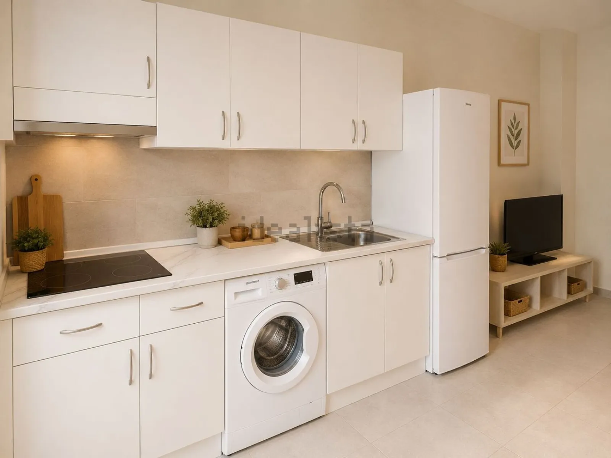
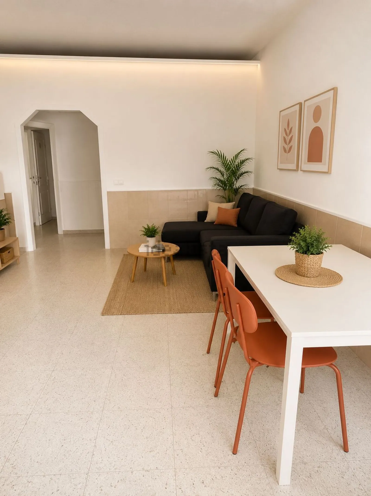
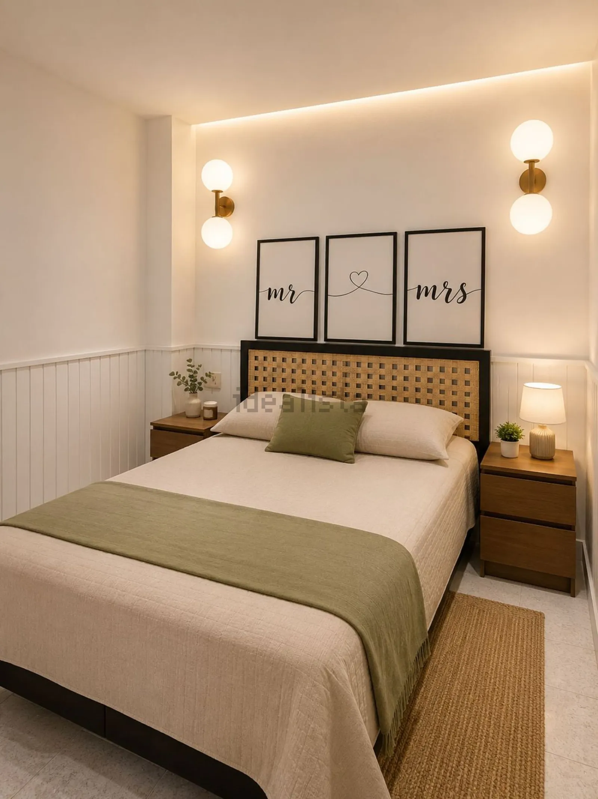
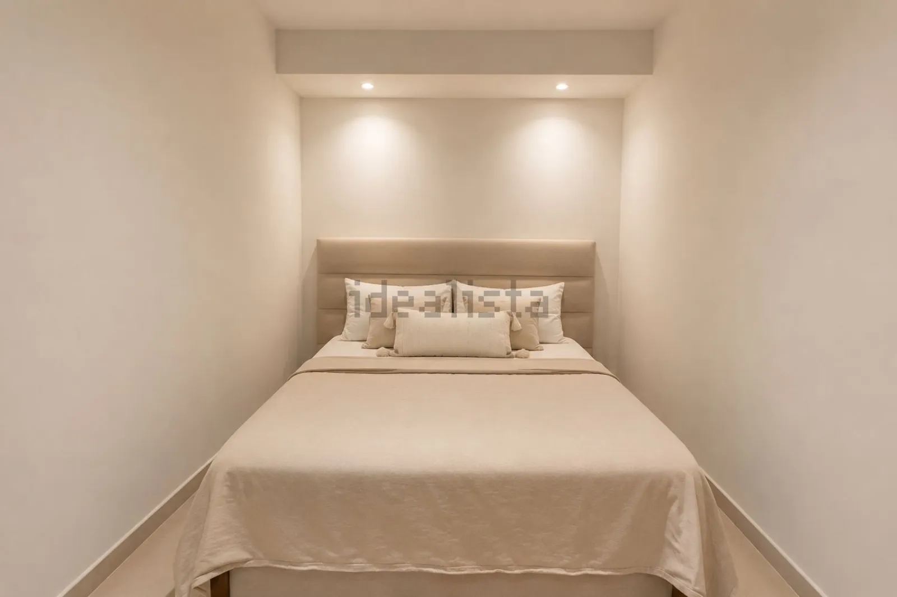
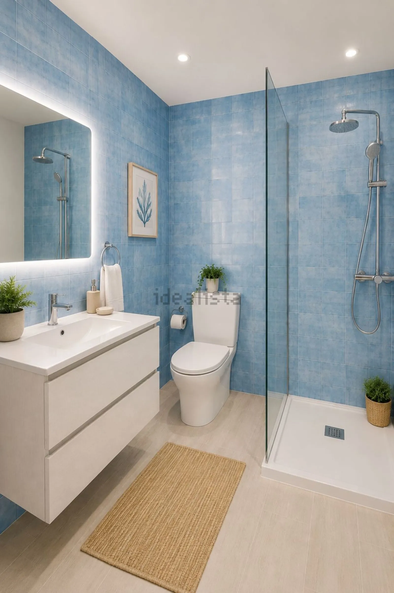

Loft de dos habitaciones en planta baja
El Fraile, Arona





El ticket de entrada más bajo del catálogo, con dos dormitorios.
Apartamento tipo loft de aproximadamente 60 m², situado en planta baja en la zona de El Fraile, una ubicación práctica y bien comunicada, con todos los servicios del día a día cerca.
La vivienda cuenta con una distribución funcional que aprovecha muy bien el espacio: 2 habitaciones, 1 baño completo, zona de salón-comedor y cocina integrada, ofreciendo un ambiente cómodo y versátil tanto para vivir como para invertir.
Al estar en planta baja, resulta especialmente cómodo para quienes buscan evitar escaleras o desean una vivienda de fácil acceso.
Una oportunidad interesante para primera vivienda, inversión para alquiler o como propiedad práctica en el sur de Tenerife.
Características
Ficha técnica
- Superficie construida
- 60 m²
- Superficie útil
- 58 m²
- Dormitorios
- 2
- Baños
- 1
- Planta
- Bajo exterior
- Ascensor
- No
- Orientación
- Sur
- Año de construcción
- 1984
- Estado
- Segunda mano · buen estado
- Comunidad
- No consta
- Certificado energético
- Consumo 382,6 kWh/m² año
- Referencia
- 111928810
Hablar de esta vivienda por WhatsApp ↗ Pedir información